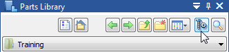

Standard Parts
Overview of Standard Parts
Standard Parts is a part library management system, which defines, stores, selects, and positions your frequently used and shared parts, such as fasteners, bearings, structural shapes, pipes, and fittings. You can build 3D assemblies quickly and efficiently by reusing common parts, rather than recreating them every time they are needed.
Companies can establish and share their own standards for parts.
Installing Standard Parts
To build your own Standard Parts library, you must select and install the Standard Parts Administration application from the Solid Edge installation screen. This loads the Standard Parts Administrator, Standard Parts-Parts Management Administrator, and the Standard Parts application.
-
Install the Standard Parts Administrator. The Standard Parts Administrator manages the databases and contents. You use it to create, update, or delete a database. It is also what you use to add parts, generate parts, and manage properties.
-
Use the Standard Parts-Parts Management Administrator to configure the Standard Parts folders and working database.
-
Open the Standard Parts application in the Assembly environment. The Standard Parts application is a client that you use to select registered parts in a database, and then place the selected parts in an assembly.
Installing Standard Parts Administrator with Solid Edge updates
When installing Standard Parts Administrator on Solid Edge updates:
-
Install Solid Edge
-
Install Standard Parts Administrator
-
Install Solid Edge update
Using Standard Parts
Once installed, you can open the application by selecting the Standard Parts button on the Parts Library docking pane when an assembly document is open.

You can also open the Part Finder application by selecting Home→Assemble→Insert Standard Parts button while working in the assembly environment.
To learn how to use Standard Parts, press F1 while running the commands in the Standard Parts application window.
Standard Parts videos
A series of videos are available to introduce important workflows:
-
Add multiple standard parts.
-
Add a single standard part.
-
Add a single standard part from an asssembly selection.
-
Add standard parts from libraries.
-
Create custom standard parts from an Excel worksheet.
-
Create custom standard parts using manual data entry.
-
Create custom standard parts by extending characteristics and properties.
-
Create custom standard parts from a Solid Edge family of parts source file.
Look up more details
Solid Edge CAM Pro commandSolid Edge Mold Tooling
2D Nesting command